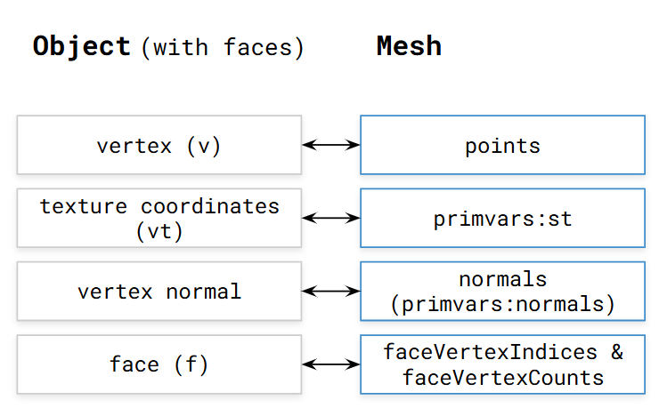
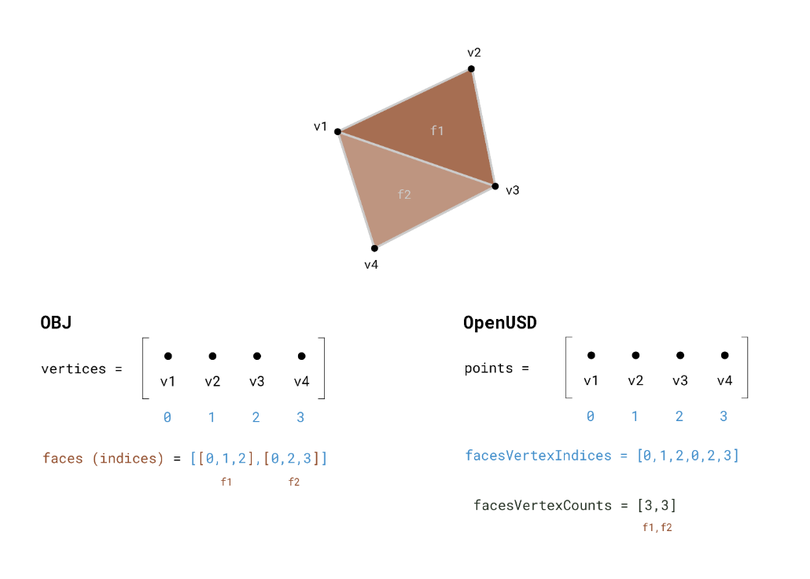
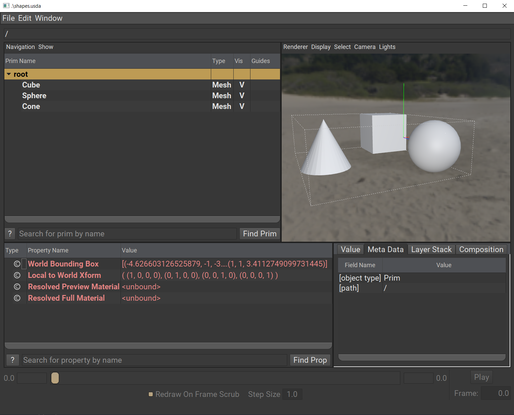

Exercise: Extracting Geometry#
Now that we have a way to parse the data in our .obj file, we can start extracting the information and translating it into OpenUSD. When parsing through each mesh in the scene, we need to make sure the mesh name can be used as an identifier or prim name.
Let’s add the Tools Foundation library to our
pxrimports. At the top of the file, addTfto the list of imports frompxr. It should look like this:
1from pxr import Tf, Usd, UsdGeom
Next, let’s add to our
extract()method. Right underneath where we defined stage and before we callreturn stage, we’ll add our initial loop to go through all meshes in the scene. In OpenUSD, we need to ensure the mesh identifier is valid before we define it in our stage.
Attention
Pay attention to your indentations if you are copying and pasting.
1for mesh in scene.meshes:
2 # Replace any invalid characters with underscores.
3 sanitized_mesh_name = Tf.MakeValidIdentifier(mesh.name)
4 usd_mesh = UsdGeom.Mesh.Define(stage, f"/{sanitized_mesh_name}")
Based on the diagram below, we’ll first extract the vertex indices of the face and the number of vertices for each face from our object.

Still within our loop, we’ll create another loop to go through each vertex index for each mesh. This allows us to assemble both the face vertex indices and the face vertex count arrays for
UsdGeom.Mesh. Add the following code underneath where we definedusd_mesh:
1
2# You can use the Vt APIs here instead of Python lists.
3# Especially keep this in mind for C++ implementations.
4face_vertex_counts = []
5face_vertex_indices = []
6for indices in mesh.indices:
7 # Convert the indices to a flat list
8 face_vertex_indices.extend(indices)
9 # Append the number of vertices for each face
10 face_vertex_counts.append(len(indices))

Both OBJ and OpenUSD store lists of vertices and lists of faces that reference their member vertices by index. OBJ keeps one global list of vertices for all objects, whereas OpenUSD tracks vertices on a per-mesh basis. Fortunately, Assimp has already taken care of mapping the global vertices of OBJ to per-mesh.
Another difference to note is that the indices from OBJ are grouped on a per-face basis, but OpenUSD prefers a flattened list of indices that can be recomposed into faces using an ordered list of face vertex counts. For an example, compare the faces and faceVertexIndices arrays in the image above.
This code accomplishes two things:
It flattens the per-face indices into one continuous list.
For each face, it counts how many indices it’s made up of to populate the list of face vertex counts.
Now, with the rest of the information from Assimp, we can create the attributes to define the points, faces and normals of the meshes in OpenUSD. Let’s add the following code to create these attributes. Place the code after our last loop but not inside of it.
1
2usd_mesh.CreatePointsAttr(mesh.vertices)
3usd_mesh.CreateFaceVertexCountsAttr().Set(face_vertex_counts)
4usd_mesh.CreateFaceVertexIndicesAttr().Set(face_vertex_indices)
5# Treat the mesh as a polygonal mesh and not a subdivision surface.
6# Respect the normals or lack of normals from OBJ.
7usd_mesh.CreateSubdivisionSchemeAttr(UsdGeom.Tokens.none)
8if mesh.normals:
9 usd_mesh.CreateNormalsAttr(mesh.normals)
It’s worth noting here that we’re setting the attribute values in two different ways:
The points attribute is set by passing a default value in the
CreatePointsAttr().faceVertexCountsis set by callingSet()using theUsdAttributeobject returned byCreateFaceVertexCountsAttr().
Both ways are available and valid. Calling Set() opens up the opportunity to set timeSamples if you need to. Also note that we are setting the subdivision scheme to UsdGeom.Tokens.none so that these meshes are explicitly treated as polygonal meshes, not SubD meshes, as OBJ doesn’t support SubD meshes.
Click to reveal our Python code up to this point.
1import argparse
2import logging
3import math
4from enum import Enum
5from pathlib import Path
6
7import assimp_py
8from pxr import Tf, Usd, UsdGeom
9
10logger = logging.getLogger("obj2usd")
11
12
13class UpAxis(Enum):
14 Y = UsdGeom.Tokens.y
15 Z = UsdGeom.Tokens.z
16
17 def __str__(self):
18 return self.value
19
20# ADD CODE BELOW HERE
21# vvvvvvvvvvvvvvvvvvv
22
23def extract(input_file: Path, output_file: Path) -> Usd.Stage:
24 logger.info("Executing extraction phase...")
25 process_flags = 0
26 # Load the obj using Assimp
27 scene = assimp_py.ImportFile(str(input_file), process_flags)
28 # Define the stage where the output will go
29 stage: Usd.Stage = Usd.Stage.CreateNew(str(output_file))
30
31 for mesh in scene.meshes:
32 # Replace any invalid characters with underscores.
33 sanitized_mesh_name = Tf.MakeValidIdentifier(mesh.name)
34 usd_mesh = UsdGeom.Mesh.Define(stage, f"/{sanitized_mesh_name}")
35 # You can use the Vt APIs here instead of Python lists.
36 # Especially keep this in mind for C++ implementations.
37 face_vertex_counts = []
38 face_vertex_indices = []
39 for indices in mesh.indices:
40 # Convert the indices to a flat list
41 face_vertex_indices.extend(indices)
42 # Append the number of vertices for each face
43 face_vertex_counts.append(len(indices))
44
45 usd_mesh.CreatePointsAttr(mesh.vertices)
46 usd_mesh.CreateFaceVertexCountsAttr().Set(face_vertex_counts)
47 usd_mesh.CreateFaceVertexIndicesAttr().Set(face_vertex_indices)
48 # Treat the mesh as a polygonal mesh and not a subdivision surface.
49 # Respect the normals or lack of normals from OBJ.
50 usd_mesh.CreateSubdivisionSchemeAttr(UsdGeom.Tokens.none)
51 if mesh.normals:
52 usd_mesh.CreateNormalsAttr(mesh.normals)
53
54 return stage
55
56
57def transform(stage: Usd.Stage, args: argparse.Namespace):
58 logger.info("Executing transformation phase...")
59
60
61def main(args: argparse.Namespace):
62 # Extract the .obj
63 stage: Usd.Stage = extract(args.input, args.output)
64 # Transformations to be applied to the scene hierarchy
65 transform(stage, args)
66 # Save the Stage after editing
67 stage.Save()
68
69# ^^^^^^^^^^^^^^^^^^^^
70# ADD CODE ABOVE HERE
71
72
73if __name__ == "__main__":
74 logging.basicConfig(level=logging.DEBUG)
75 parser = argparse.ArgumentParser(
76 "obj2usd", description="An OBJ to USD converter script."
77 )
78 parser.add_argument("input", help="Input OBJ file", type=Path)
79 parser.add_argument("-o", "--output", help="Specify an output USD file", type=Path)
80 export_opts = parser.add_argument_group("Export Options")
81 export_opts.add_argument(
82 "-u",
83 "--up-axis",
84 help="Specify the up axis for the exported USD stage.",
85 type=UpAxis,
86 choices=list(UpAxis),
87 default=UpAxis.Y,
88 )
89
90 args = parser.parse_args()
91 if args.output is None:
92 args.output = args.input.parent / f"{args.input.stem}.usda"
93
94 logger.info(f"Converting {args.input}...")
95 main(args)
96 logger.info(f"Converted results output as: {args.output}.")
97 logger.info(f"Done.")
From here we can save the file and execute the script on our
shapes.objfile. Run the following in the terminal:
Windows:
python .\data_exchange\obj2usd.py .\data_exchange\shapes.obj
Linux:
python ./data_exchange/obj2usd.py ./data_exchange/shapes.obj
We can use usdview to see the results. Execute the following command in the terminal:
Windows:
.\scripts\usdview.bat .\data_exchange\shapes.usda
Linux:
./scripts/usdview.sh ./data_exchange/shapes.usda
You should now see the three shapes in the viewport. Notice that the artistic intent for the normals is preserved. The sphere has smooth normals, but the cone is faceted.
